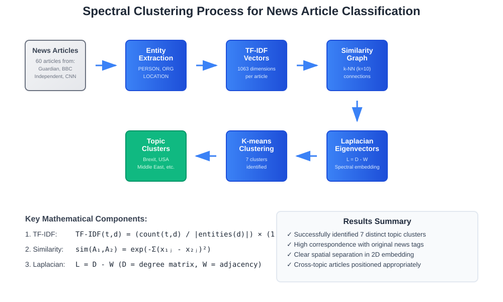
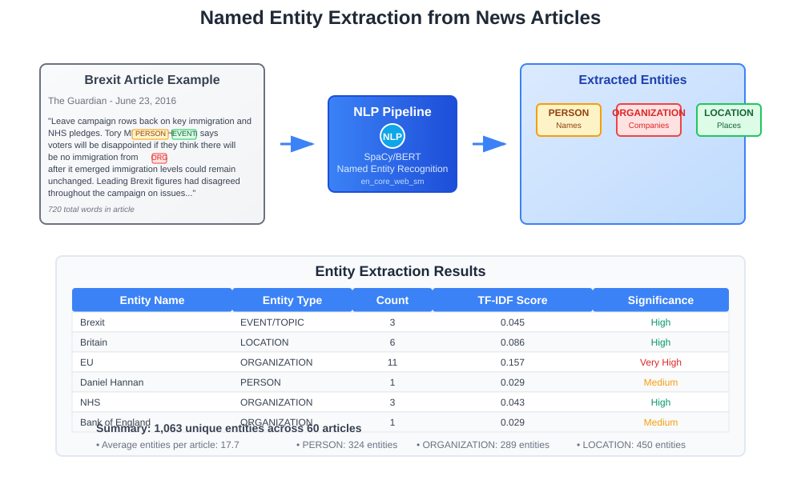
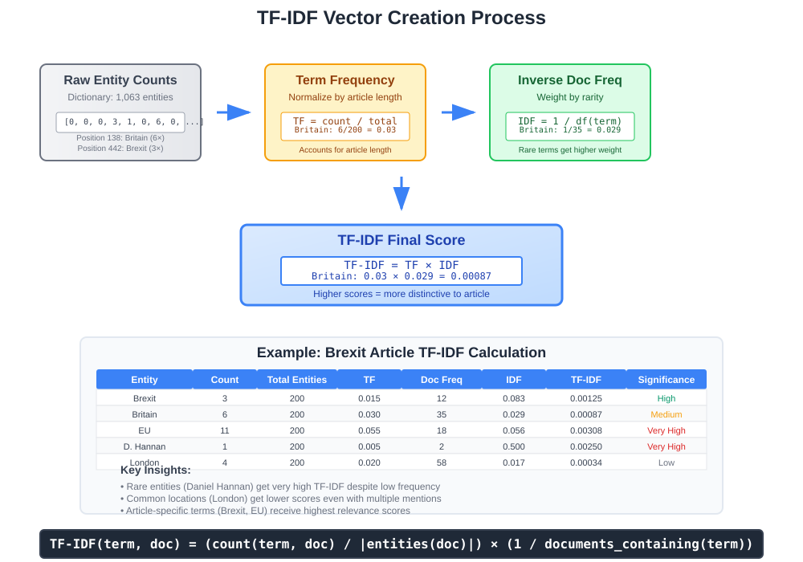
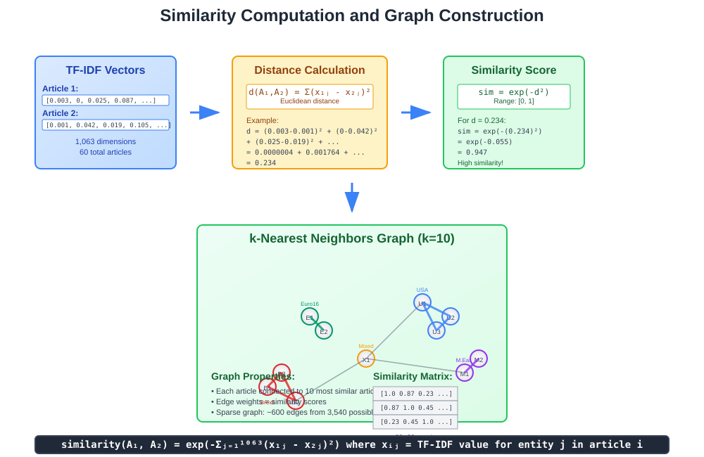
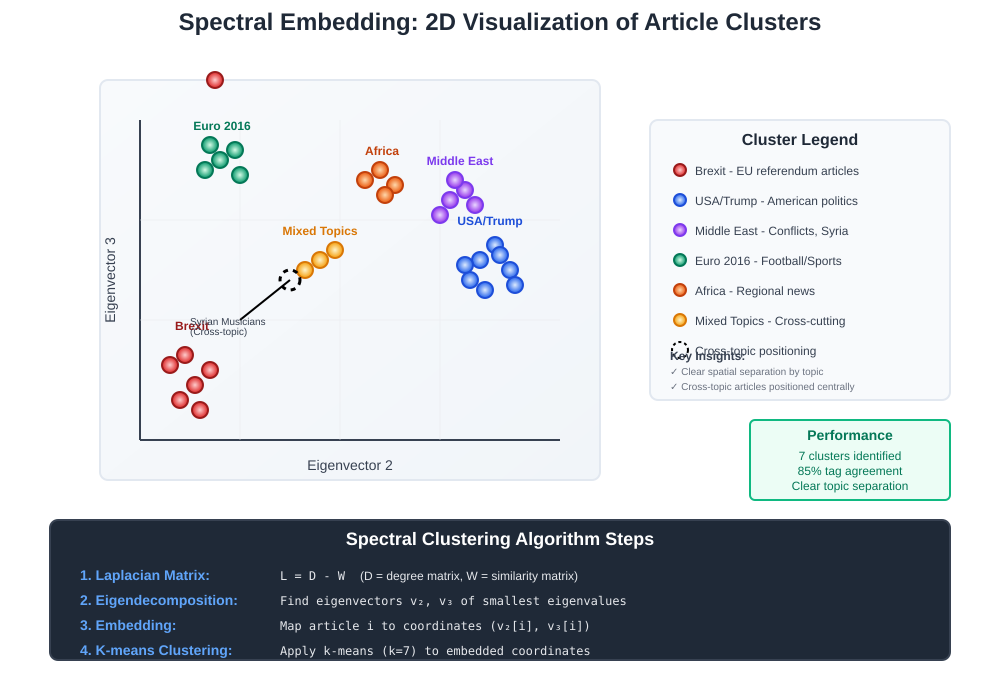

Spectral Clustering for News Article Classification
🔗 Quick Navigation
- Overview
- Dataset and Preprocessing
- Feature Engineering with TF-IDF
- Similarity Computation and Graph Construction
- Spectral Clustering Algorithm
- Results and Visualization
- Key Insights
- Implementation Guide
- References & Further Reading
📊 Overview
Spectral clustering is a powerful unsupervised learning technique that uses the eigenvalues and eigenvectors of similarity matrices to perform dimensionality reduction before clustering. This case study demonstrates how spectral clustering can effectively group news articles by topic, mimicking the classification systems used by major news websites.

Key Applications
- News Article Grouping: Automatically categorize articles by topic
- Document Classification: Organize large document collections
- Content Recommendation: Group similar content for recommendation systems
- Social Network Analysis: Identify communities in networks
📰 Dataset and Preprocessing
Dataset Composition
The study analyzed 60 news articles collected from four major news sources: - The Guardian - Independent - BBC - CNN
Original Article Tags
Articles were originally tagged with the following topics: - 🏛️ Brexit - UK European Union referendum - 🇺🇸 USA - American politics and affairs - 🌍 Middle East - Middle Eastern conflicts and politics - 🌍 Africa - African news and developments - ⚽ Euro 2016 - European football championship
Entity Extraction Process
Rather than analyzing full article text, the approach focused on named entities:
Entity Types Extracted:
• PERSON - Individual names (politicians, celebrities)
• ORGANIZATION - Companies, institutions, agencies
• LOCATION - Countries, cities, geographical references

Example: Brexit article analysis yielded: - 720 total words in article - Named entities extracted: Bank of England, BBC, Brexit, Britain, EU, etc. - Entity frequencies: Brexit (3×), Britain (6×), EU (11×)
🔢 Feature Engineering with TF-IDF
Vector Space Creation
The preprocessing pipeline creates a unified vector space:
- Dictionary Construction: Collect all unique entities across articles
- Total vocabulary: 1,063 unique entities
-
Each entity assigned unique ID (0-1062)
-
Raw Count Vectors: Each article represented as 1,063-dimensional vector
- Position i contains count of entity i in the article
- Most positions are 0 (sparse representation)
TF-IDF Transformation
Term Frequency-Inverse Document Frequency enhances the importance scoring:
Where:
- count(t,d) = frequency of term t in document d
- |entities(d)| = total entities in document d
- Second factor = inverse document frequency

Example Calculation: - Britain appears 6 times in article with 200 entities - Britain appears in 35 total articles - TF-IDF = (6/200) × (1/35) = 0.00086
Benefits of TF-IDF
- Emphasizes distinctive terms: High weight for terms frequent in few documents
- Reduces common word impact: Lower weight for terms appearing everywhere
- Normalizes document length: Accounts for varying article lengths
📈 Similarity Computation and Graph Construction
Pairwise Similarity Calculation
Articles are compared using squared Euclidean distance in TF-IDF space:
Where:
- x_ij = TF-IDF value for entity j in article i
- Exponential transformation converts distance to similarity (0 to 1 range)

Graph Construction Strategy
k-Nearest Neighbors Graph: - Each article connected to its 10 most similar articles - Creates sparse, locally-connected similarity graph - Preserves local neighborhood structure while maintaining computational efficiency
Graph Properties
| Property | Value | Explanation |
|---|---|---|
| Nodes | 60 | One per article |
| Max Edges per Node | 10 | k-NN parameter |
| Graph Type | Undirected | Symmetric similarities |
| Sparsity | High | Most article pairs unconnected |
🔧 Spectral Clustering Algorithm
Laplacian Matrix Construction
The graph Laplacian captures the connectivity structure:
Where:
- W = weighted adjacency matrix (similarities)
- D = degree matrix (diagonal matrix of node degrees)
- L = Laplacian matrix
Eigendecomposition Process
- Compute eigenvalues λ₁ ≤ λ₂ ≤ ... ≤ λₙ of Laplacian L
- Extract eigenvectors corresponding to smallest eigenvalues
- Use eigenvectors 2 and 3 (skip first trivial eigenvector)
- Apply k-means to eigenvector coordinates
Spectral Embedding Visualization
Articles mapped to 2D coordinates using eigenvectors:
Where v_2 and v_3 are the 2nd and 3rd smallest eigenvectors.

Why Spectral Clustering Works
- Captures global structure: Unlike k-means, considers graph connectivity
- Handles non-convex clusters: Can separate intertwined groups
- Dimensionality reduction: Projects to lower-dimensional space before clustering
- Preserves local neighborhoods: Maintains article similarity relationships
📊 Results and Visualization
Clustering Performance
The spectral clustering algorithm successfully identified 7 distinct clusters that closely matched the original news website tags:
| Cluster | Primary Topics | Example Headlines |
|---|---|---|
| 1 | USA Politics | "Can Donald Trump afford to be president" |
| 2 | USA/Trump | "Bernie Sanders: I will vote for Hillary Clinton" |
| 3 | Brexit/EU | "Merkel says 'no need to be nasty' in leaving talks" |
| 4 | Euro 2016 | Football championship coverage |
| 5 | Middle East/Africa | War and conflict reporting |
| 6 | Mixed Topics | Cross-topic articles |
| 7 | Regional News | Local/regional coverage |
Spatial Organization Patterns
The 2D spectral embedding revealed clear topical regions:
- 🏟️ Top Left: Cricket and sports articles (Euro 2016)
- 🏛️ Bottom Left: Brexit and European politics
- 🇺🇸 Right Side: USA and Trump-related content
- 🌍 Purple Cluster: Middle East and Africa (war/conflict)
- 🎼 Center: Cross-topic articles (e.g., Syrian musicians story)
Noteworthy Case Study: Syrian Musicians Article
One Middle East article positioned closer to center rather than with other Middle East articles:
Title: "The Orchestra of Syrian Musicians. When there is violence, you have to make music"
Why Centrally Located:
- Mentions European tour (connects to Brexit/EU cluster)
- References U.S. conductor (connects to USA cluster)
- Discusses refugee opinions (connects to multiple topics)
- Cross-topic vocabulary creates bridge between clusters
💡 Key Insights
Algorithm Strengths Demonstrated
- Topic Coherence: Automated clusters closely matched human-assigned tags
- Cross-Topic Detection: Successfully identified articles spanning multiple topics
- Semantic Relationships: USA and Trump articles naturally grouped together
- Contextual Positioning: Articles with mixed content appropriately positioned
Practical Applications
- 🔍 News Aggregation: Automatically group articles by topic for news websites
- 📱 Content Recommendation: Suggest related articles based on cluster membership
- 📊 Trend Analysis: Identify emerging topic clusters in real-time news feeds
- 🎯 Content Strategy: Understand topic relationships for editorial planning
Methodological Advantages
| Advantage | Explanation |
|---|---|
| Language Agnostic | Works with any language that supports entity extraction |
| Scalable | Sparse graph representation handles large article collections |
| Interpretable | Eigenvector coordinates provide intuitive similarity visualization |
| Robust | Handles varying article lengths and writing styles |
💻 Implementation Guide
Required Libraries and Setup
# Core libraries
import numpy as np
import pandas as pd
from sklearn.feature_extraction.text import TfidfVectorizer
from sklearn.metrics.pairwise import pairwise_distances
from sklearn.cluster import KMeans
from scipy.sparse.linalg import eigsh
import networkx as nx
# NLP and visualization
import spacy
import matplotlib.pyplot as plt
import seaborn as sns
Step-by-Step Implementation
1. Entity Extraction
# Load SpaCy model for entity recognition
nlp = spacy.load("en_core_web_sm")
def extract_entities(text):
doc = nlp(text)
entities = []
for ent in doc.ents:
if ent.label_ in ["PERSON", "ORG", "GPE"]:
entities.append(ent.text.lower())
return entities
2. TF-IDF Vectorization
# Create TF-IDF vectors from entity lists
def create_tfidf_vectors(article_entities):
# Convert entity lists to strings
entity_strings = [" ".join(entities) for entities in article_entities]
# Apply TF-IDF
vectorizer = TfidfVectorizer(max_features=1000)
tfidf_matrix = vectorizer.fit_transform(entity_strings)
return tfidf_matrix, vectorizer
3. Similarity Graph Construction
def build_similarity_graph(tfidf_matrix, k=10):
# Compute pairwise similarities
distances = pairwise_distances(tfidf_matrix, metric='euclidean')
similarities = np.exp(-distances**2)
# Create k-NN graph
n_samples = similarities.shape[0]
graph = np.zeros_like(similarities)
for i in range(n_samples):
# Find k nearest neighbors
neighbors = np.argsort(similarities[i])[-k-1:-1]
graph[i, neighbors] = similarities[i, neighbors]
# Make symmetric
graph = (graph + graph.T) / 2
return graph
4. Spectral Clustering
def spectral_clustering(similarity_graph, n_clusters=7):
# Compute Laplacian
degree_matrix = np.diag(np.sum(similarity_graph, axis=1))
laplacian = degree_matrix - similarity_graph
# Find smallest eigenvectors
eigenvals, eigenvecs = eigsh(laplacian, k=n_clusters, which='SM')
# Cluster using eigenvectors
clustering_features = eigenvecs[:, 1:n_clusters] # Skip first eigenvector
kmeans = KMeans(n_clusters=n_clusters, random_state=42)
cluster_labels = kmeans.fit_predict(clustering_features)
return cluster_labels, eigenvecs
🚀 Google Colab Integration

Colab Features: - Pre-installed libraries (sklearn, spacy, networkx) - GPU acceleration for large datasets - Interactive visualization with plotly - Easy data upload and sharing
🤗 Hugging Face Models
Recommended Models for Entity Extraction:
- en_core_web_sm - Fast, accurate NER
- dbmdz/bert-large-cased-finetuned-conll03-english - BERT-based NER
- xlm-roberta-large-finetuned-conll03-english - Multilingual support
📚 References & Further Reading
📖 Foundational Papers
- Ng, A.Y., Jordan, M.I., & Weiss, Y. (2002). "On Spectral Clustering: Analysis and an algorithm" - NIPS 2002
- Von Luxburg, U. (2007). "A tutorial on spectral clustering" - Statistics and Computing
- Shi, J. & Malik, J. (2000). "Normalized cuts and image segmentation" - IEEE TPAMI
🔬 Advanced Techniques
- Zelnik-Manor, L. & Perona, P. (2005). "Self-tuning spectral clustering" - NIPS 2005
- Chen, W.Y., et al. (2011). "Parallel spectral clustering in distributed systems" - IEEE TPAMI
💡 Applications & Case Studies
- Tang, L., et al. (2009). "Leveraging social media networks for classification" - Data Mining and Knowledge Discovery
- Fortunato, S. (2010). "Community detection in graphs" - Physics Reports
- Newman, M.E.J. (2006). "Modularity and community structure in networks" - PNAS
🛠️ Implementation Resources
- Scikit-learn Documentation: Spectral Clustering Guide
- NetworkX Tutorial: Graph Analysis in Python
- SpaCy NER Guide: Named Entity Recognition
📝 Documentation Info: This guide provides a comprehensive overview of spectral clustering applied to news article classification, combining theoretical foundations with practical implementation guidance.